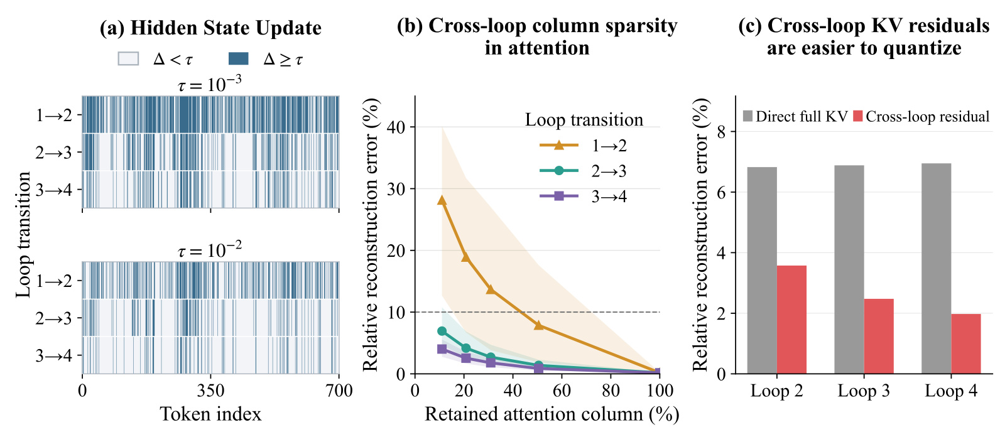
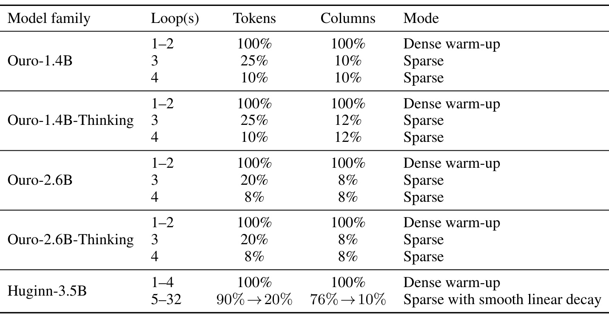
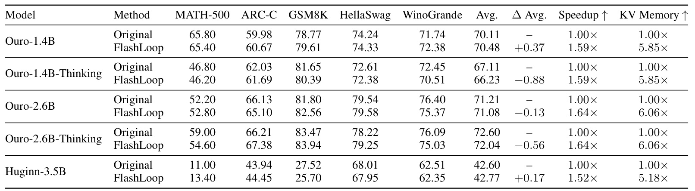
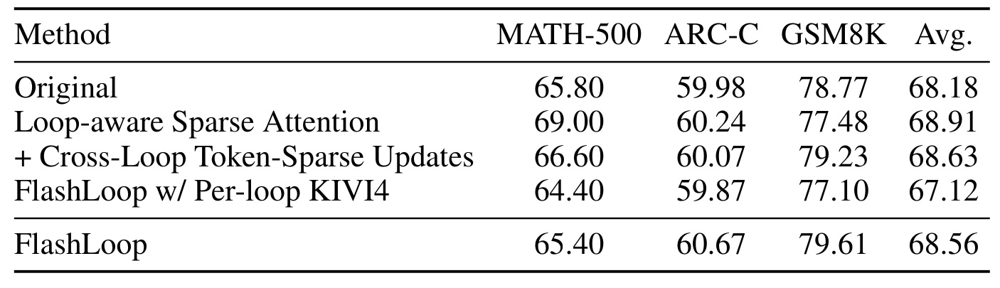
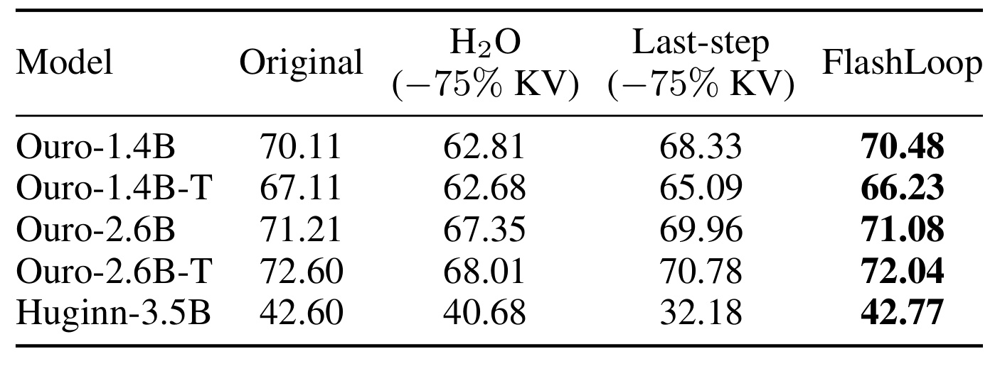
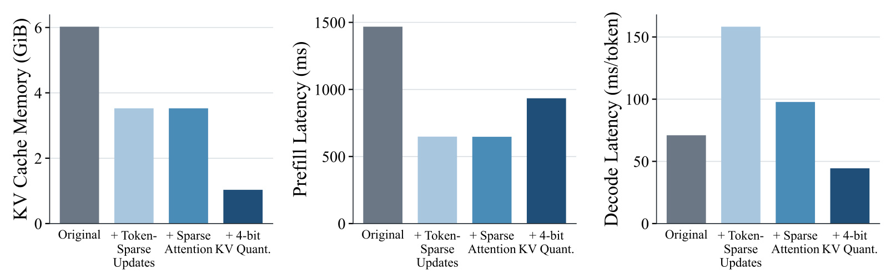
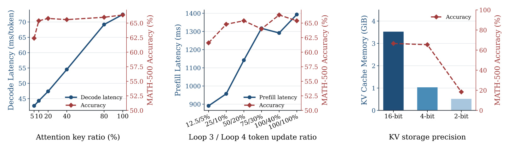
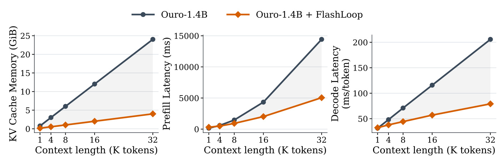
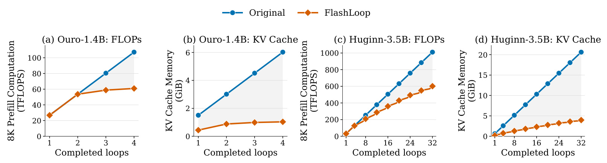
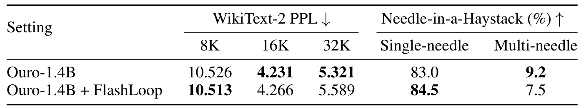

FlashLoop：通过惰性更新加速循环 Transformer
- 论文：FlashLoop: Fast and Memory-Efficient Looped Transformers via Lazy Updates
- 作者：Wanqi Yang、Shiwei Liu。
- 机构：第一作者所属 ELLIS Institute Tübingen；共同署名包括 Max Planck Institute for Intelligent Systems、Tübingen AI Center。
- 发布与阅读时间：arXiv v1，2026 年 9 月 24 日；本笔记于 2026 年 9 月 28 日核验。
- 类别：大模型推理效率，循环模型，稀疏计算，KV 缓存量化。
- 项目与代码：作者项目页、官方实现，本轮入口可访问；未在本地复跑模型。
1. 背景和问题
循环 Transformer 每增加一轮就需要再执行一遍共享模块，并为这一轮保留独立的 KV 状态；因此，参数数量的节省并不自然转化为实际推理计算和缓存内存的节省。这是摘要及引言提出的核心问题。FlashLoop 所做的事情，是检查循环中的状态到底改变了多少，再把“不需要重新算的部分”和“必须更新的部分”分开处理。它不改变模型权重，也没有重新训练一个更小的循环模型，而是给现有循环模型增加近似推理路径。
循环结构把参数深度与计算深度解耦。传统模型逐层使用不同权重，增加深度通常也增加参数；循环模型反复使用同一组 Transformer 模块，权重只存一份，却能在隐空间多轮加工。用论文的记号，一轮递归可以写为：
其中，$H^{(r)}$ 是第 $r$ 轮后的全部 token 隐状态，$F_\theta$ 是共享参数 $\theta$ 的模块，$R$ 为循环次数。这个式子描述计算过程，不意味着不同轮产生的表示相同。同一 token 在不同轮对应不同的键和值；在自回归解码中，后续 token 查询相应轮次的历史表示，需要能够取到这些状态。因此，权重共享只减少模型参数存储，并没有自动消除中间表示的轮次维度。若每轮包含 $N$ 个块，朴素展开需要执行 $RN$ 次块计算，缓存也要随循环深度增长。
引言给了一个直观对照：在单张 A100、32K 提示长度的描述中，四轮 Ouro-2.6B 的预填充耗时为 27 秒、KV 缓存为 48 GiB，而 Llama-3.1-8B 分别为 3 秒和 4 GiB。这里比较的是模型设计带来的成本差异，并非本文主实验的同模型消融；这组描述也不能与后文 A100-SXM4-40GB 上 Ouro-1.4B 的测量数值直接拼接。真正需要解决的是，在长上下文与多轮循环叠加时，小参数模型可能需要更大的中间状态空间，甚至失去单卡部署优势。仅以模型文件大小判断推理成本，会遗漏这一部分。
论文 Figure 1 还展示了 8K 上下文下的资源比较，强调 FlashLoop 可以把循环模型的成本拉回非循环模型附近。但所谓“性能匹配”需要谨慎解读：附录 Table 4 中 Ouro-2.6B、Qwen3-8B、Gemma3-12B、Llama-3.1-8B 并非在五个任务上逐项相同，数学表现尤其存在差距。因而最有说服力的证据不是“小循环模型全面胜过大模型”，而是固定同一模型，比较加速前后质量和成本。本文也以这类配对结果作为后续阅读主线。
作者将跨循环冗余分成三个相互关联、却不能混为一谈的层次。首先是 token 行：某些位置已经趋于稳定，无须每轮继续通过整个模块。其次是注意力列：对仍然执行的查询，历史键值中只有少量列需要重新计算贡献。最后是状态数值：即使必须保存新 KV，变化量也可能比完整状态更适合低位宽表示。三种优化分别决定“哪些位置继续算”“查询读取哪些历史信息”和“这些信息用多少比特存”。区分这些层次，才能理解为何减少算术量并不总能单独减少延迟。

Figure 2 的左图把相邻两轮之间各 token 的隐状态变化画成条带，分别采用两个阈值。纵向观察从第一轮到第二轮、再到后续轮次，大幅变化的位置越来越少，而且后续仍然活跃的位置大体落在前一轮活跃位置之内。它支持的是一种经验上的嵌套结构：已经稳定的位置通常继续稳定，因此可以尝试只在先前活跃集合内部挑选下轮 token。它并没有证明被跳过的位置永远不会重新变重要，也没有给出任意输入上的收敛保证。对算法而言，这个区别意味着节约计算的同时，要接受不可重新激活所引入的近似风险。
中间图改变保留的注意力列比例，纵轴是重建误差。早期轮次即使保留较多列，误差也可能显著；后期轮次只更新少量列就能得到更接近完整计算的输出。因此，论文安排前几轮密集计算，而不是从第一轮一律使用极端稀疏模式。右图对比完整 KV 独立量化与跨轮残差量化，在相同量化设置下，后者重建误差更小，并随轮次推进进一步降低。三幅图连在一起才形成完整动机：稳定的 token 减少新状态数量，稳定的注意力列减少读取量，小残差降低剩余信息的表示成本。它们是特定模型与样本上的观测，不是任务准确率的替代指标。
更具体地说，注意力输出对键列的贡献还取决于对应值向量，所以“高概率列”等同于“全部输出变化来源”只能是近似判断。作者用上一轮概率排序，优点是便宜且已有缓存，代价是无法提前知道下一轮查询变化导致的重要性翻转。附录的注意力热图展示某个 MATH-500 提示在多个层与轮次中的列模式持续性，但单个提示不能覆盖所有推理链。我们应把定量重建曲线、下游任务分数与实际系统耗时作为互补证据，而非选取其中一个就宣布没有代价。
FlashLoop 与一般 KV 淘汰也有重要差别。淘汰历史 token 常常意味着之后不再保留那些位置的细节；这里的“惰性”主要是沿循环轴复用已有状态，而非把整个历史位置删除。非活跃位置的旧 KV 仍可被查询，稀疏注意力未更新列的旧贡献也会留在输出里。这使它能够保住跨轮信息，但也意味着实现必须维护状态版本、列索引与残差链，不能通过简单地缩短序列长度来获得同等结果。
现有跨层缓存共享关注不同层之间的冗余，一般稀疏注意力关注同一轮内部的读取模式，而循环模型额外拥有同一参数模块反复执行的时间结构。论文利用的正是这条额外维度。相关循环缓存方法有的依赖学习门控，有的训练压缩编码器与解码器，FlashLoop 则以已有模型为起点，不要求改变其预训练结构。这种部署路径降低了重训练成本，却把质量保障责任转移到校准和推理评测：只要模型的循环动态发生变化，原先的保留预算就可能失效。因而“无需训练”应理解为权重无需更新，而不是不需要任何模型相关验证。
2. 方法
2.1 跨循环 Token 稀疏更新
前几轮先密集计算所有 token，为后续选择提供可靠的状态差异。进入稀疏轮后，输入是前两轮隐状态、上一轮活跃集合和本轮预算；输出是更小的活跃集合，以及只在这些位置更新的隐状态与 KV。这里比较的是同一位置跨轮的变化，而不是不同位置之间的相似度，因而不应替换成普通相似token合并。论文附录给出归一化状态变化和选择规则：
符号解释：$i$ 为 token 位置，$s_i$ 为归一化变化分数，$\epsilon$ 防止分母接近零，$k(r)$ 是第 $r$ 轮保留预算，$A^{(r)}$ 为活跃 token 集合。分母消除了不同位置状态幅度的一部分影响，使选择更接近相对变化排序。预算决定保留多少行，变化分数决定具体保留哪些行。论文采用校准后固定的轮次预算，但每个输入的活跃位置仍由其实际状态变化决定，因此“固定比例”与“动态选择”并不矛盾。
集合满足 $A^{(r)}\subseteq A^{(r-1)}$。嵌套不是额外的数学推导，而是算法有意采用的限制：被跳过的位置没有本轮新变化量，若继续对它打分需要重新计算，便会抵消收益。活跃 token 通过共享模块并生成新的键值，非活跃 token 直接继承前一轮表示。预填充时，这会减少投影、MLP 和相应行计算；存储时，后续轮不再需要为每个 token 都创建一套新状态。但旧状态仍是有效历史信息，不能把“不更新”误写成“从注意力上下文删除”。
这部分没有训练损失，也没有梯度更新。预训练模型保持原状，额外过程是在 WikiText-2 校准样本上选择满足重建误差条件的比例。训练免费并不等于零配置：新模型至少需要确认预热轮数、各轮预算和数值精度。对于较晚才改变语义的 token，嵌套停止更新可能锁住错误中间表示；尤其当任务需要多轮隐推理时，状态变化较小也不一定说明该位置对最终答案不重要。作者的下游实验部分检验这种风险，但没有从理论上消除它。
2.2 循环感知稀疏注意力
为了理解列更新，需要先区分注意力矩阵的行与列。对一个当前查询，历史每个位置对应一个键列和一个值向量；更新部分列的贡献不会自动重算未选择列。标准密集计算先为全部可见历史位置生成分数，再统一归一化并汇总值向量。分母把全部列耦合起来，这正是稀疏替换需要特别处理概率尺度的原因。原始注意力对一个查询的计算为：
这里 $q^{(r)}$ 为当前查询，$K^{(r)}$ 与 $V^{(r)}$ 为本轮历史键值，$d$ 是单头维度。FlashLoop 的输入除了当前查询，还包含上一轮的注意力输出、重要列索引和概率质量；输出是对原输出进行局部贡献替换后的近似结果。它不把整个注意力限制为所选列，而是把未选列的旧贡献复用下来。这样，稀疏的是“本轮更新的贡献”，而不一定是最终输出所携带的全部历史信息。
需要特别处理局部 softmax 的归一化。假设所选列在完整分布中只占部分质量，如果直接在这些列上 softmax，它们的概率和会被放大到一，从而系统性夸大这些列的贡献。附录 D.2 把传播过程写得比正文 Eq.3 更完整。设 $C$ 是来源轮实际计算的列集，$m_C$ 是该集合在全局尺度上的缓存质量，则：
帽子表示使用压缩缓存或近似计算得到的量。来源轮若密集计算所有因果可见键，$m_C=1$；如果来源轮本身已经稀疏，必须沿用其缓存质量，不能重新假设总和是一。来源集合已经包含先前筛选的结果，所以后续预算只能在它内部继续收缩，不能恢复此前丢掉的列。由来源轮分布与下轮预算 $c(r)$，得到新列集和它的质量：
其中 $S$ 是下一轮重算的列索引，$m$ 是上一轮赋予这些列的全局概率质量，预算满足 $1\leq c(r)\leq |C|$。缓存的不只是一个排名列表，还包括能把局部分布还原到上一轮全局尺度的标量。这两个对象必须对应同一个列集合，否则即使列索引正确，输出幅度也会出错。当前轮只读取这些列，计算局部分布后再乘缓存质量：
保留全局概率尺度，是稀疏更新与普通局部注意力之间的关键区别。这个近似允许所选列内部重新分配概率，却假设它们的总体质量可以沿用上一轮。若当前查询使选中集合的真实质量大幅改变，缓存质量就会过时。算法避免完整分母计算所省下的成本，正对应了这一部分无法精确更新的信息。因此不能将上述式子称为原始密集注意力的代数等价变形。接着，把原来属于选中列的贡献扣掉，补入新贡献：
这里输出的三个部分依次是上一轮完整近似输出、选中列旧贡献和选中列新贡献。正文 Eq.3 展示相同的替换思想，但使用了省略质量尺度的局部 softmax 简式；严谨实现应结合正文 4.2 的说明与附录 Eq.6–7，而不能孤立照抄 Eq.3。后续轮可以继续缩减列预算，并传播新的索引和质量。这与 token 活跃集合是两套选择机制：前者决定哪些查询位置更新，后者决定这些计算访问哪些键列，二者索引的语义不同。
2.3 跨循环 KV 残差量化
第三个模块负责把留下来的状态压缩。令 $X$ 代表键或值，$Q$ 为量化算子，$D$ 为反量化算子。第一轮先构造量化基座；后续轮计算的残差必须相对已重建的上一轮状态，而不是未经量化的理想上一轮状态：
这相当于让当前残差同时承担真实跨轮变化和纠正前轮重建偏差的作用。若错误地改为两份全精度状态直接相减，然后在读时从带误差的基座累加，量化误差就会以另一种方式传播，已经不是论文的算法。对于活跃与非活跃位置，附录给出分段重建：
活跃位置只保存低比特残差，非活跃位置不生成新负载。读某轮 KV 时，需要把基座与相应残差累积起来。它并未宣称所有残差天然具有更低相对误差；支撑来自论文测量和任务消融。残差幅度变小通常有利于在有限量化区间中保留细节，但分组尺度、离群值和误差反馈都会影响最终表现，因此仍需实际验证。
实现采用 INT4 非对称分组量化，组大小为 64，组内最小最大值决定缩放和偏移。键在 RoPE 之后按通道量化，值按 token 量化；最近的 64 个 token 保留 BF16。这里也有容易忽略的观测与实现区别：Figure 3 展示的是 pre-RoPE 键残差幅度，而实际缓存量化使用 post-RoPE 键，两者不能不加说明地视为同一个测量张量。全精度近端尾部、分组元数据与索引都占空间，所以“16 位变成 4 位”不能直接等同于整体缓存恰好缩小四倍。论文更大的节约来自位宽压缩与新状态数量减少共同作用。
2.4 快速 GPU 支持
算法上的稀疏需要合适的执行布局才会变成墙钟收益。作者同时提供 PyTorch 参考实现和 GPU 推理引擎，后者使用紧凑缓冲区收集活跃 token 与键列，尽量保持规整矩阵乘法，减少动态索引带来的碎片化。Q、K、V 投影融合为一次 GEMM，门控 MLP 的 gate 与 up 投影也融合，目的是减少启动和中间张量开销。这些操作与跨轮选择配套，不能只在模型前向函数中添加索引切片就假设获得相同速度。
KV 在 GPU 上实际采用打包四位表示，加上轻量量化元数据和短 BF16 尾部。自定义 CUDA 核在 QK 与 PV 计算期间直接读取基座和残差流，避免先完整恢复一份 BF16 缓存。后期解码还有融合选择与计算的稀疏核，使中间计算随保留预算变化。输入是压缩的跨轮状态链，输出是注意力计算需要的局部贡献，重建过程尽可能与使用过程接近。若实现中先物化全部状态再执行稀疏选择，虽然结果可能正确，但带宽和峰值显存收益会被明显削弱。
这套引擎针对 NVIDIA GPU 上的 BF16 激活推理。论文没有证明同样收益可直接迁移到其他硬件或大规模连续批处理服务。更重要的是，稀疏更新、量化解码、缓存重建与选择开销可能互相抵消，后面的效率消融确实出现单个模块加入后某阶段变慢的现象。因此应把 FlashLoop 看作联合设计，而不是三个可以无条件独立叠加的加速开关。方法部分没有额外训练目标，所有质量变化都来自推理近似与执行方式变化。
3. 实验结果
3.1 模型、任务与固定校准策略
实验覆盖五个循环模型：Ouro-1.4B、Ouro-1.4B-Thinking、Ouro-2.6B、Ouro-2.6B-Thinking 与 Huginn-3.5B。主任务为 MATH-500、ARC-Challenge、GSM8K、HellaSwag 和 WinoGrande，使用 EleutherAI LM Harness。前两种数学任务与常识、推理任务提供不同质量视角；五项平均分是等权汇总，不是按样本数加权的统一准确率。它可以概括整体趋势，却可能掩盖特定任务明显下降，所以必须同时读取逐列结果。
校准在 WikiText-2 随机抽取的 128 条序列上完成。作者为每个模型选出使相应隐状态或注意力输出相对重建误差低于 5% 的最小保留比例，之后固定到所有下游任务。这个设计避免为每个评测集单独调整参数，但校准语料与数学推理、复杂检索之间仍然存在分布差异。固定参数不代表未知任务也满足相同重建误差，更不代表最终答案错误率只变化 5%。

Table 5 把预热与稀疏阶段划分得很清楚。Ouro 系列前两轮都保留全部 token 和全部列。Ouro-1.4B 后两轮 token 比例分别为 25% 和 10%，列比例都是 10%；Thinking 版本 token 比例相同，列比例放宽到 12%。两个 2.6B 版本后两轮 token 比例为 20% 和 8%，列比例为 8%。Huginn 的前四轮密集，第五至第三十二轮采用平滑线性衰减，token 比例从 90% 降至 20%，列比例从 76% 降至 10%。所以不同家族的压缩强度不是同一份参数简单复制，也不能仅看最终轮比例推断总成本。
表中 token 比例特指预填充时重新计算的提示 token 行，列比例特指解码时重新计算的注意力列。若把二者当作同一个“稀疏率”，就无法解释为什么 token 稀疏主要影响预填充，而列稀疏主要影响解码。密集预热仍需付出完整成本，并生成初始状态与选择统计；对于只有少数循环的模型，这部分会形成不可消除的开销下限。较深循环有更多后期可压缩计算，但还需要积累更多残差版本，实际收益取决于两者的平衡。表格给出的是作者最终使用的配置，而不是保证最优的普适公式。
还应注意校准预算与动态索引的组合。固定的是每轮选多少，输入依赖的是选择哪些，因此同一模型在所有任务共用预算并不能说明所有任务激活相同位置。对复现而言，最先需要核对的不是最终平均分，而是预热轮次、归一化分母、活跃集合是否嵌套、每轮实际保留数量、列质量传播和 BF16 尾部长度是否与论文一致。任何一个细节改变，都可能得到另一个速度质量折中点，而不能继续使用作者表中的收益数字作为实现的保证。
3.2 主结果：总体接近不等于逐项无损

Table 1 中五个模型的平均分变化依次为 +0.37、−0.88、−0.13、−0.56、+0.17 个百分点。Ouro-1.4B 从 70.11 到 70.48，Ouro-1.4B-Thinking 从 67.11 到 66.23，Ouro-2.6B 从 71.21 到 71.08，Ouro-2.6B-Thinking 从 72.60 到 72.04，Huginn-3.5B 从 42.60 到 42.77。与这些质量变化同时出现的端到端加速分别为 1.59、1.59、1.64、1.64、1.52 倍，峰值 KV 缓存缩小分别为 5.85、5.85、6.06、6.06、5.18 倍。这里的 KV 倍数是原始缓存与压缩缓存之比，不是整张 GPU 总显存缩小同样倍数。
最需要单独强调的是 Ouro-2.6B-Thinking 的 MATH-500 从 59.00 降至 54.60，下降 4.40 个百分点。其余几项上涨或小幅下降，使平均损失看起来只有 0.56 个百分点，但对以数学能力为核心目标的应用，这个下降不能被平均值抵消。Ouro-1.4B-Thinking 的五项也全部低于原模型，说明 Thinking 版本至少在这些实验中更敏感。相反，基础版 Ouro 和 Huginn 的平均分较稳，部分任务出现提升。论文未报告多随机种子方差或显著性检验，因此不能把这些小幅提升解释为加速机制必然改善模型能力。
摘要使用了无损措辞，但更准确的结论是：在作者配置下，多数模型的等权任务平均分接近原模型，存在可见的模型和任务级损失。这与正文较谨慎的“基本保持”描述更一致。大约六倍 KV 节约是有价值的，尤其可能使某些长度或批量进入可运行范围，但它不是对精度没有任何影响的承诺。若业务主要依赖某一类推理，验收指标必须直接覆盖该能力，而不能只要求复现五项平均分。
若将这些差值写成相对百分比，会放大或缩小读者对变化的感受，因此这里统一使用百分点；压缩和速度则保留倍数。两种单位回答不同问题，不能混用。峰值KV减小也没有包含模型权重的同比变化，权重本身完全没有被该方法压缩。对于显存中权重占比更高的短上下文请求，总显存收益自然小于KV缓存收益。
3.3 精度消融与替代缓存策略

Table 2 只平均 MATH-500、ARC-C、GSM8K 三个任务，基线为 68.18，与主表五任务平均 70.11 口径不同。单独使用循环感知稀疏注意力后为 68.91，再加入 token 稀疏更新为 68.63，完整 FlashLoop 为 68.56。这个顺序显示，联合稀疏的损失在此模型和三个任务上较小，但不是每添加一个模块平均分都上升。MATH-500 从仅稀疏注意力时的 69.00 降到联合 token 稀疏时的 66.60，再到完整方法的 65.40；同时 GSM8K 有不同变化方向，因此平均分的稳定来自多项结果共同作用。
最直接检验残差表示价值的对照，是保留 FlashLoop 的其他机制，把跨轮残差量化换成逐轮完整 KV 的四位量化。该变体平均为 67.12，而完整方法为 68.56，相差 1.44 个百分点；完整 KV 变体三个任务分别为 64.40、59.87、77.10，均低于完整 FlashLoop 对应结果。由于作者说明量化轴保持一致，这比跨论文比较更接近对残差表示本身的隔离检验。它支撑“相同低位设置下残差表示更稳”，但仍只是在这三个任务、这一模型上的结果，不能外推到任意位宽或量化组大小。
这张表还有一个阅读陷阱：单独稀疏注意力的数学分数高于原模型，并不说明它总能作为精度增强技术。推理近似可能改变生成轨迹，个别题目从错误变正确，也可能反过来；没有方差与重复采样时，不能把这类变化赋予稳定机制解释。论文主要目标是让质量代价在压缩收益面前可接受，表中更可靠的信息是残差量化优于独立完整量化，以及组合后的平均损失较小。工程选择仍需要同时查看下一张效率图，才能知道保留哪一模块真正节省资源。
从三个任务的逐列数字看，残差表示改善的不是单个偶然有利任务，而是这组对照中的全部列；但仍缺少不同随机校准集下的一致性检验。这一点把已有证据的强度与后续还需确认的稳定性区分开。

Table 3 的 H2O 方案按累计注意力保留 25% 缓存 token，末轮复用方案只保留最终循环的 KV；两种对照均标注减少 75% KV。对 Ouro-1.4B，原始、H2O、末轮复用与 FlashLoop 的五任务平均依次为 70.11、62.81、68.33、70.48。对 Huginn-3.5B，末轮复用从 42.60 降至 32.18，比 H2O 的 40.68 还低，而 FlashLoop 为 42.77。这说明深循环模型的中间轮信息可能具有独立价值，只保存最后一轮不能简单替代跨轮状态表示。把中间状态用残差形式保留下来，是 FlashLoop 与粗粒度删缓存策略的本质差异。
但不能把该表称作完全等内存预算竞赛。两个基线按负 75% 配置，FlashLoop 主表的压缩倍数并不恰好为四倍，且实现的索引、量化元数据、近端尾部可能不同。表中也没有这些替代方案对应的完整延迟列，因此其证据主要是质量保持情况，而不是联合质量、延迟、内存的严格帕累托最优性。进一步比较应扫多个预算点，再在实际峰值内存或延迟匹配的条件下比较任务质量。当前结果已足以说明按循环结构保留信息有优势，但不足以宣称覆盖了所有缓存压缩方法。
此外，H2O 原本沿 token 维度选择，末轮复用沿循环维度舍弃，两者面对的误差类型不同。前者可能删掉之后重新重要的历史位置，后者可能丢失某一循环所需的表示层次；FlashLoop 也有自己的旧状态滞后和概率质量过时风险。把三者都写成“KV压缩”会掩盖这些差异。真正值得借鉴的是围绕模型固有的循环冗余设计保留规则，而不是单纯追求某一个更高压缩比例。
另外，表中末轮复用的负75%标记与Huginn三十二轮结构之间的精确存储核算需要结合代码确认，不能据标签自行推断其全部轮次状态都只保留一份。这里只按作者表格报告配置和质量结果。
3.4 效率消融揭示模块间的代价转移

Figure 4 从左到右分别展示 KV 缓存、预填充延迟和逐 token 解码延迟，横轴是在基线之上累计加入模块。token 稀疏把缓存从约 6 GiB 降到约 3.5 GiB，也把预填充从约 1.45 秒降到约 0.65 秒；这些读图值仅用于解释趋势，并非额外精确测量。加入稀疏注意力后，这两项变化不大；再加入四位残差量化，KV 进一步降至约 1 GiB，但预填充反而回升至约 0.93 秒。可见量化与重建不是免费操作，省带宽的同时可能增加算术和调度成本。
右图尤其重要：基线解码约 70 毫秒每 token，单独 token 稀疏后升到约 160，加入列稀疏后降到约 98，直到完整四位量化后才降到约 45。因而不能把文章概括成“三个模块分别都让推理更快”。图中可观察到的是，token 稀疏显著有利于预填充，却给解码路径引入不利成本；列稀疏和压缩访存逐步抵消这些成本，完整组合才在所测设置上胜过原始解码。论文未逐项量化解释这段额外开销来自哪些核或访存操作，读者不应凭想象归因到某一个因素。
这组现象说明部署目标应拆成预填充与解码两部分。长提示短输出更重视预填充，长输出交互则更容易受解码影响；同一组合的端到端收益会随请求形态改变。主表的加速是完整基准实验的墙钟口径，不能通过这几个柱子的简单平均重建。复现时应分别测量选择、压缩缓存读取、残差累积与主矩阵计算，确认目标服务中的瓶颈。论文给出的联合内核让整体收益成为可能，但并不免除针对工作负载重新测量的必要。
预填充与解码的负载差异也解释了为什么论文需要同时报告三个面板。如果只呈现缓存下降，就会遗漏token稀疏单独拖慢解码这一事实；如果只呈现最终解码，就看不到量化重新抬高预填充开销。

Figure 5 的三个面板改变不同控制变量。左侧列保留比例越低，解码通常越快；在大部分区间数学准确率相对平稳，但压到 5% 时出现明显下降。中间按“第三轮比例／第四轮比例”扫描 token 更新，较保守配置的预填充较慢，25%／10% 附近已经获得可观收益；更极端的 12.5%／5% 则付出质量损失。右侧从 BF16 改为四位，缓存明显下降而准确率接近；降到两位时准确率大幅变差。三者共同揭示实际可用的是一段折中区域，而不是把所有预算拉到最小值。
需要注意左右两类纵轴：蓝色是延迟或内存，红色是 MATH-500 准确率，某些坐标并不从同一个数值范围开始，不能根据线条视觉斜率比较质量与性能谁“更敏感”。每个面板也是局部参数扫描，不能把三个最优端点任意组合后视作已经被实验验证的新设置。尤其 token 选择改变了后续 KV 更新内容，列选择又影响注意力误差，两种近似可能相互放大。完整主表的固定配置比单维最激进点更具有可解释性。
这也解释了为何只用重建误差校准还不够。低幅状态变化未必对应低任务敏感性，而两位量化可能使关键残差细节越过答案决策边界。图中的准确率下降并不提供统一安全阈值，只在 Ouro-1.4B 和所测数学任务上展示可见边界。新模型、不同上下文分布、不同输出长度都需要重新核验。在没有这样的核验前，应将四位配置理解为作者验证过的设计点，将两位配置理解为本实验已经暴露风险的反例。
同时，图中两位结果已经足以反驳“残差量化因此可以无限降低位宽”的推论。残差较小只是改变数值分布，剩余细节仍可能决定模型选择；压缩上限最终必须由任务结果约束。
3.5 上下文和循环深度扩展
效率分析使用单张 NVIDIA A100-SXM4-40GB。预填充在预热后重复三次，用 CUDA events 测量并报告中位数；解码先预热 16 个 token，再对接下来的 16 个 token 求平均每 token 延迟。附录另说明主基准的加速与缓存是整个基准运行的墙钟耗时与峰值 KV 缓存。这两套口径相关但不同：少量稳态 token 的微观延迟并不等同于包含所有提示和生成长度的总耗时，也不代表高并发在线服务的尾延迟。

Figure 6 对 Ouro-1.4B 扫描 1K、4K、8K、16K、32K 上下文。随着长度增长，原始缓存和注意力成本上升，FlashLoop 的绝对节约更显著。原文在 32K 给出减少约 20 GiB KV、降幅 82.8%，并描述约 1.6 倍端到端加速。图中的预填充和解码曲线也展示长上下文收益较大，但由于图形点位是局部测量，不能把任一曲线比值当作整个基准的端到端倍数。缓存缩小尤其能改变可容纳的长度和批量，但这仍需要把模型权重、激活与运行时额外内存一起算入设备容量。
这里存在一个应保留的图文疑点：正文紧邻图的叙述写解码延迟降低约 37.5%，而图中 32K 终点看起来约从 205 毫秒降至 80 毫秒，对应更大的降幅。由于作者没有在该段明确给出两者是否使用不同汇总方式，本笔记不自行择一改写，也不把读图近似值包装为精确结论。可靠表述是解码曲线明显改善，具体百分比需要从作者原始测量或实现结果进一步核对。将这一不一致指出，比把两组口径混在一句性能宣传中更有助于复现。
测量长度本身也限制外推。只在预热后的 16 个 token 上取平均，能够降低启动噪声，却不能描述很长生成过程中活跃集合、缓存尾部和残差访问的变化。作者没有提供分位数、请求并发度扫描或不同设备结果，因此“单卡更快”与“生产吞吐必然同比提升”之间仍有缺口。对端到端业务，应保留同样输入、生成长度和缓存预算，实际测量吞吐、首 token 时延与每 token 延迟，再决定收益是否落到目标指标。
在尚未取得完整原始时间记录时，最稳妥的比较仍是同一张图、同一上下文长度下的有无加速曲线。跨图拼接不同模型或不同阶段的耗时，会产生并未实际测量的收益值。

Figure 7 固定 8K 上下文，分别观察四轮 Ouro-1.4B 与三十二轮 Huginn-3.5B。原始模型每增加一轮近似增加固定计算和新缓存，曲线接近线性。FlashLoop 的前期密集计算仍然存在，Ouro 的前两轮计算曲线几乎重合，后期因为只更新少量 token 而逐渐拉开；缓存则从基座开始就受低位宽影响。Huginn 的后续预算平滑下降，所以其计算仍随循环增加，只是斜率减小。不能把这张图理解成“增加循环不再需要成本”。
图中纵轴写的是累计预填充计算量与 KV 内存；尽管计算图采用 TFLOPS 字样，其叙述对象是累计 FLOPs，不能误当作硬件吞吐率。四个面板的数值范围也不同，因此比较应关注同一面板内两条曲线，不能直接比较不同模型的线条高度。深循环提供更多可复用机会，同时需要更复杂的残差读取链；论文测到的净收益说明这些成本在其实现中被控制住，但没有证明任意扩大循环数都保持同样比例。
另外，图中的资源增长并没有对应每个循环数下的任务准确率曲线。它证明的是在这些预定循环配置上成本增长更慢，而不是证明压缩后的额外循环一定带来更多能力。若把节省出来的预算重新投入更多循环，最终是否比原始少循环模型更好，需要固定总成本后再测任务质量。这个问题对于把循环当作测试时算力扩展手段尤其重要，论文当前结果提供了系统基础，却还没有完成“相同预算下更多推理能力”的完整验证。
这一区分也影响对测试时扩展的理解：更多循环是一种计算资源选择，而非自动增加正确率的保证；缓存压缩降低了资源门槛，却没有替代循环深度本身的任务选择策略。
3.6 长上下文质量的收益与缺口

Table 6 中 Ouro-1.4B 在 8K、16K、32K 上的 WikiText-2 困惑度分别从 10.526、4.231、5.321 变为 10.513、4.266、5.589。8K 略好，16K 与 32K 略差；32K 的绝对增加为 0.268，约为原值的 5%。这些测试从同一 token 流构造确定性前缀，再在后续 128 个真实 token 上评价，因此不同长度的困惑度不能简单解读成“上下文越长模型整体越准”。同长度有无 FlashLoop 的配对变化才是本表适合回答的问题，样本覆盖也明显小于大规模长文本质量评测。
单针检索准确率从 83.0% 升到 84.5%，多针从 9.2% 降到 7.5%。多针下降 1.7 个百分点，且原始模型的绝对能力已经较低，这两点都应被保留。平均或单针较稳，不足以支持复杂多证据检索无损；在难度较高的场景中，原始能力弱会使压缩后的表现更难用单个平均指标判断。论文没有在这张表给出多针样本量、置信区间或按位置分解的结果，本笔记不推断显著性，也不把下降完全归结到某一种压缩模块。
这部分结果与主表 Thinking 数学下降共同提示：循环中的小变化可能仍然承载任务所需的信息。量化和惰性更新对于一般平均分较稳，但涉及多个线索整合或更深推理时需要更细验收。比较合理的复现扩展，是沿上下文长度、线索数量、目标位置、生成长度分别分层，并记录哪些样本发生答案翻转；同时保存活跃 token 与列集合的演化，检查失败是否来自过早冻结、列质量滞后或残差误差。本文未执行这些额外实验，因此它们属于后续检验方向，不是已证实的失败归因。
表中单针与多针的变化方向相反，因而也不宜合并成一个“长上下文准确率”数字。对需要多份证据联合定位的检索增强任务，多针表现应被单独列为质量门槛，避免单针成功掩盖复杂检索退化。
4. 总结
FlashLoop 最值得保留的贡献，是把循环模型的计算深度视为一个可压缩的状态变化过程。参数共享并不意味着状态共享，但很多后期状态已经接近稳定；在这种结构下，只更新活跃 token、只替换少量注意力列贡献、以量化基座加残差保存 KV，可以同时减少计算、读取和存储。完整系统在五个模型上获得 1.52–1.64 倍端到端加速与 5.18–6.06 倍峰值 KV 缩小，体现了跨轮信息复用的实际价值。
机制上最容易复现错的两点，是稀疏列的全局概率质量传播，以及残差必须相对重建前轮状态。前者避免局部 softmax 把部分贡献错误放大到全部质量，后者使实际压缩链与更新目标一致。两处都需要结合附录理解，单看正文概念式或只实现“取前若干列、四位量化”并不足以得到论文方法。token 稀疏和列稀疏也不能共用一个含义模糊的稀疏率：它们发生在不同轴上，主要影响的执行阶段不同。
本文证据有四类明确边界。第一，质量不是逐项无损，Thinking 模型和部分数学任务有明显下降，五项平均会掩盖这一点。第二，稳定集合与概率质量沿用是经验假设，没有任意输入的误差保证，被冻结的位置不能自然重新激活。第三，硬件与负载覆盖有限，单张 A100、短稳态解码测量无法直接代表所有服务部署。第四，长上下文质量验证只涉及有限模型与任务，尤其多针准确率本身偏低，尚不能支持复杂长文任务的全面保持。除此之外，Figure 6 的解码百分比与终点读图存在待核对口径，使用收益数字时应注明来源。
系统层面还应保留一个反直觉结论：优化组件并非单调变好。Figure 4 中 token 稀疏单独显著恶化解码，而量化又增加部分预填充成本；只有组合后的数据布局、列读取与压缩内核才实现整体收益。因此评估不能停在 FLOPs 下降或张量位宽下降，应对每条执行路径测量墙钟和峰值内存，并把固定开销计算进去。论文展示的是一套相互配合的推理实现，不是无条件适配所有框架的免费加速层。
后续最有价值的验证有三个方向。首先，复现五个模型的逐任务结果并加入多次运行或置信区间，优先检查 2.6B-Thinking 的数学退化与多针检索损失。其次，在固定总延迟或总内存预算下，比较压缩后增加循环与原始较少循环的能力，验证节省算力能否真正换来更好的答案。再次，扩展设备、批量和生成长度，分析选择、残差读取与量化核的占比，并核对图文中不同延迟口径。若这些验证成立，FlashLoop 才能从特定循环模型的有效优化，进一步成为可预测、可选择的部署策略。
对阅读者而言，本论文的直接启发是：当模型重复应用共享模块时，优化对象应包括跨轮“变化”而不只是每轮完整“状态”。但是变化小、概率集中、量化友好三件事均需用任务质量约束，而不能以某一种重建指标替代所有能力评价。本笔记的性能数字均来自作者论文，未独立运行训练或推理基准；所有扩展判断均作为研究理解或待验证方向保留。阅读和复现应优先以附录的完整数学定义为准，再核对实现的状态布局，最后才比较压缩倍数，避免在算法并不相同的情况下追求相同数字。